本包逐图公开合成界面、准确来源及独立结论。ADAPTED是明确适配；MAPPED是同类容器；MISSING是缺直接原参考；FAIL保留可见问题。拍图/并包完整不等于严格全产品1:1，也不证明真实桌面。旧图、旧失败和旧源码身份不倒改；修复须另看新来源。
gap-migration-backup-pending · 1280×800
MAPPED — 400px任务窗显示制作升级前完整备份，备份尚未完成/退出未确认/配置未提交；任务、保护、取消及关闭可读。仅批次结果容器映射，阶段来自有限合成回执，不证明真实备份。
同类参考容器：batch-progress-fixture；不是同名原商业执行。
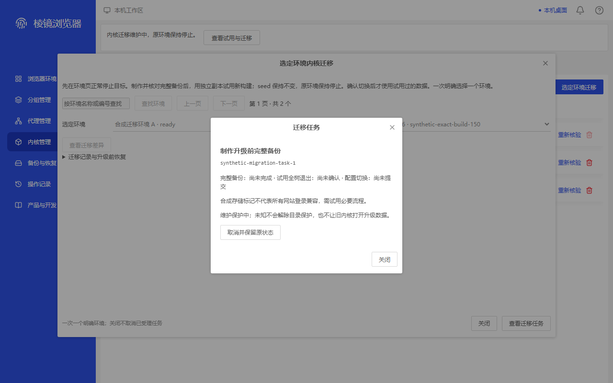
62cb0f94b246602cf4c418422d94b7180c04907abe4edd7bd66a5c1656072bd2
gap-migration-backup-ready · 1280×800
MAPPED — 400px任务窗显示完整备份已核对与合成包SHA，退出未确认/配置未提交仍清楚；取消/关闭完整。仅批次结果容器映射，已核对字段不是实际包验证通过。
同类参考容器：batch-progress-fixture；不是同名原商业执行。
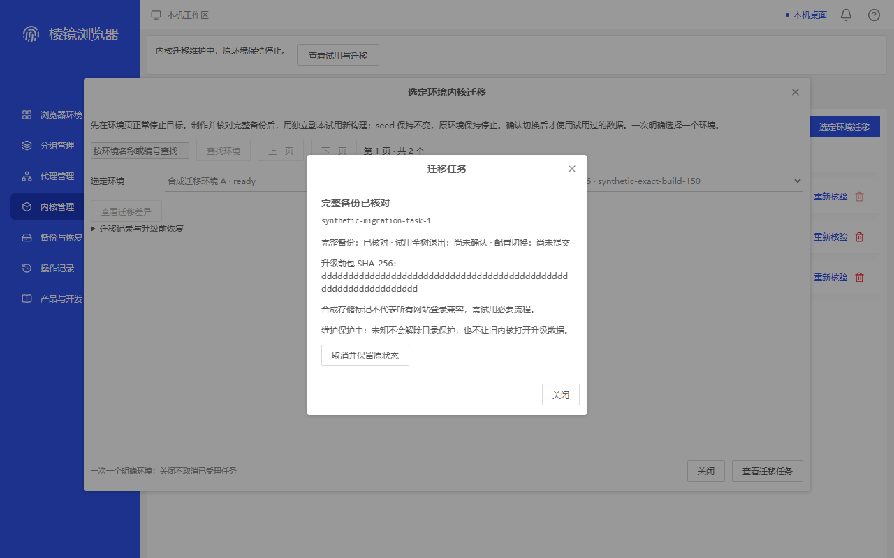
e611eda90dc75a5c861806d10c34c7a20eacceb94f8fe0c765dcb0e644832a6e
gap-migration-copy-ready · 1280×800
MAPPED — 400px任务窗显示独立工作副本已准备，同一合成任务/包且退出未确认、配置未提交；保护与取消/关闭可读。仅批次结果容器映射，不证明真实目录复制或迁移完成。
同类参考容器：batch-progress-fixture；不是同名原商业执行。
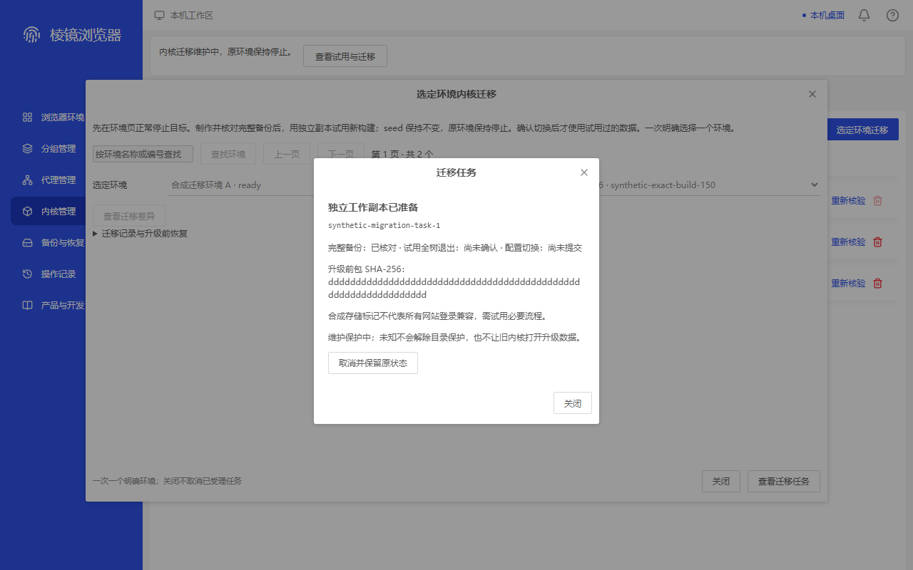
b39a7aae7e0830ca202c233c72e4578ddc7026f12e1e132ea142e7f589883a51
gap-migration-expanded-bottom · 1280×800
MAPPED — 1040×592列表容器映射；两侧uiLanguage/system/未下发--lang末行实际可见，正文494/600/106，footer y646–704未覆盖末行。顶部选择行随滚动离开边缘属底部位置；支持参数/能力为合成合同，非内核验收。
同类参考容器：proxy-bound；不是同名原商业执行。
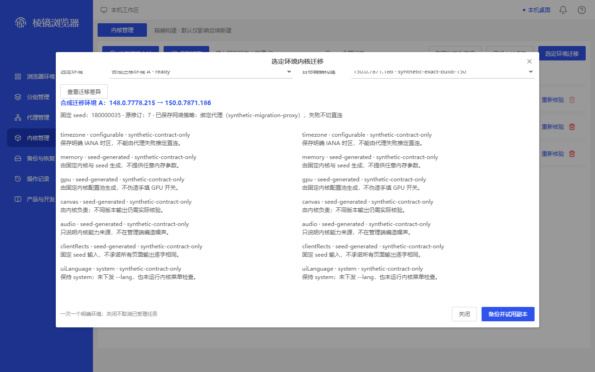
41c40c63e7a34d99d18955d02a3cf4624990acc963dae991d6fd069c3e44f9e4
gap-migration-expanded-top · 1280×800
MAPPED — 1040×592列表容器映射；两行构建变化、固定seed/修订/保存代理、展开位置及两侧参数开头可见，footer完整。正文494/600/0仍有滚动内容，不能作为全部8参数/13能力正文或真实内核读值通过。
同类参考容器：proxy-bound；不是同名原商业执行。
f8956f12bc9c693cf7df8b338f09f407093ffa62f57b6bbbfdbaa62e1d2eb569
gap-migration-history-gates · 1280×800
MAPPED — 1040px列表容器内两条历史记录与查看按钮可读；原状态已保留且无核实完整备份的记录，其恢复预检呈禁用态，另一终态有入口。仅合成历史门控显示，不证明备份存在或真实恢复可用。
同类参考容器：proxy-bound；不是同名原商业执行。
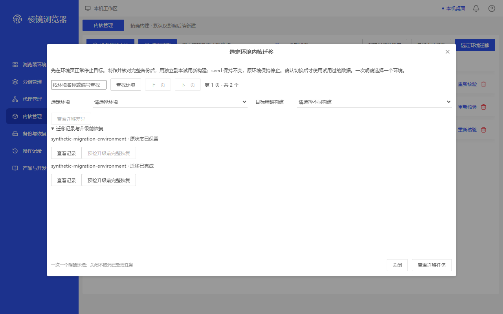
91b7c80f295661d5968244fda6e95b6299d61be457b6c22f4894940e4ac855c9
gap-migration-lookup-busy · 1280×800
MAPPED — 1040px查找窗显示在途合成查询，选择/预览呈禁用态，没有差异/试用，分页与关闭footer完整。仅列表容器及在途显示映射；释放/迟到响应顺序来自保存动作，不由静态PNG认证。
同类参考容器：proxy-bound；不是同名原商业执行。
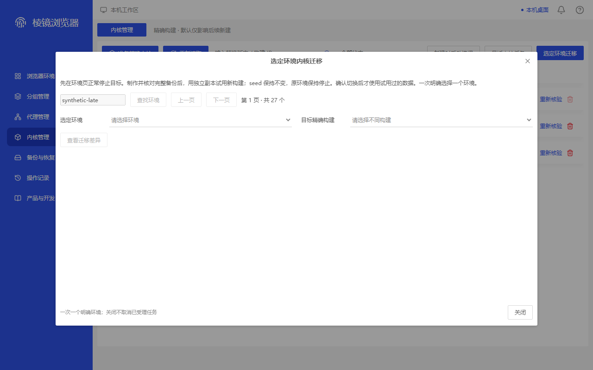
765ed545968312bd6c0873f636d8aa63942cc5499fc95cbbfbc286eb08bb206a
gap-migration-lookup-empty · 1280×800
MAPPED — 1040px查找窗第1页/共0个、环境占位与禁用预览可读，无差异/试用，关闭footer完整。仅列表容器/空结果映射；折叠选择框不展示全部选项，未执行真实查找。
同类参考容器：proxy-bound；不是同名原商业执行。
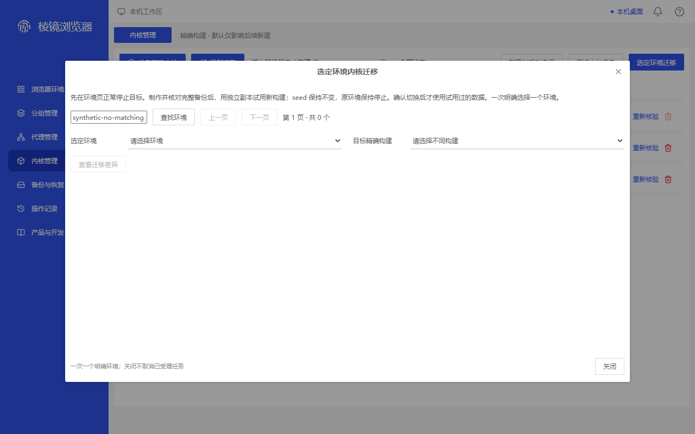
59da8f3ad291ab40aaa1a6a5c84ccb5758f86485934c5affcd71c05ac33d49f4
gap-migration-lookup-page-two · 1280×800
MAPPED — 1040px查找窗第2页/共27个、已选目标环境及精确构建、查看差异入口清晰，关闭footer完整。25+2及目标首轮off-page来自保存列表/请求；本图折叠选项不能单独证明两项清单或同名原迁移业务。
同类参考容器：proxy-bound；不是同名原商业执行。
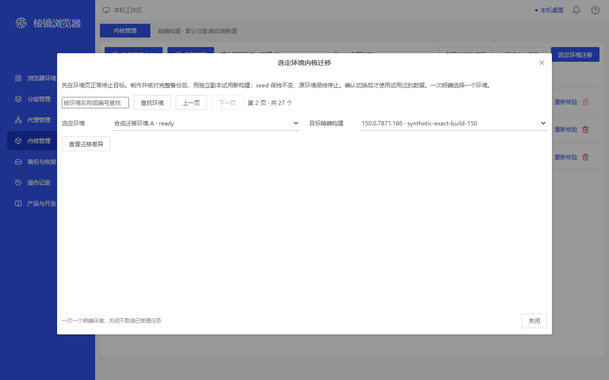
6a1a77312615ecc54ccb6bbb5ab2aa21b2455933425fe4cf64f9928344688397
gap-migration-lookup-read-error · 1280×800
MAPPED — 1040px查找窗合成读取失败说明可见，旧页共27个仍保留、预览禁用且无差异；关闭完整。仅列表容器/失败显示映射，不把失败当空结果或读取成功，重读行为另有保存记录。
同类参考容器：proxy-bound；不是同名原商业执行。
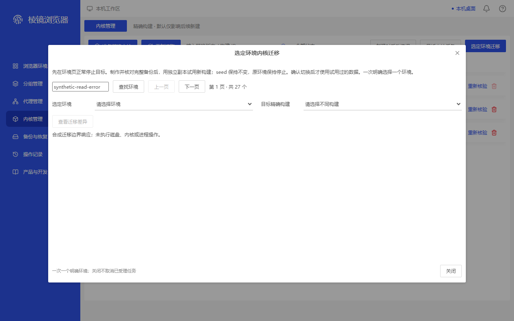
847eab41c5fc08ebb5c1a0db1d06adf8ff639e27190bab8c104cb4d876cec46d
gap-migration-malformed-migration-preview · 1280×800
MAPPED — 1040px选择窗显示MIGRATION_RESULT_UNCONFIRMED，没有差异/备份试用入口，错误与关闭可读。仅列表容器及拒收显示映射，预览身份不符原因由保存回执说明，不认证全部校验或真实native。
同类参考容器：proxy-bound；不是同名原商业执行。
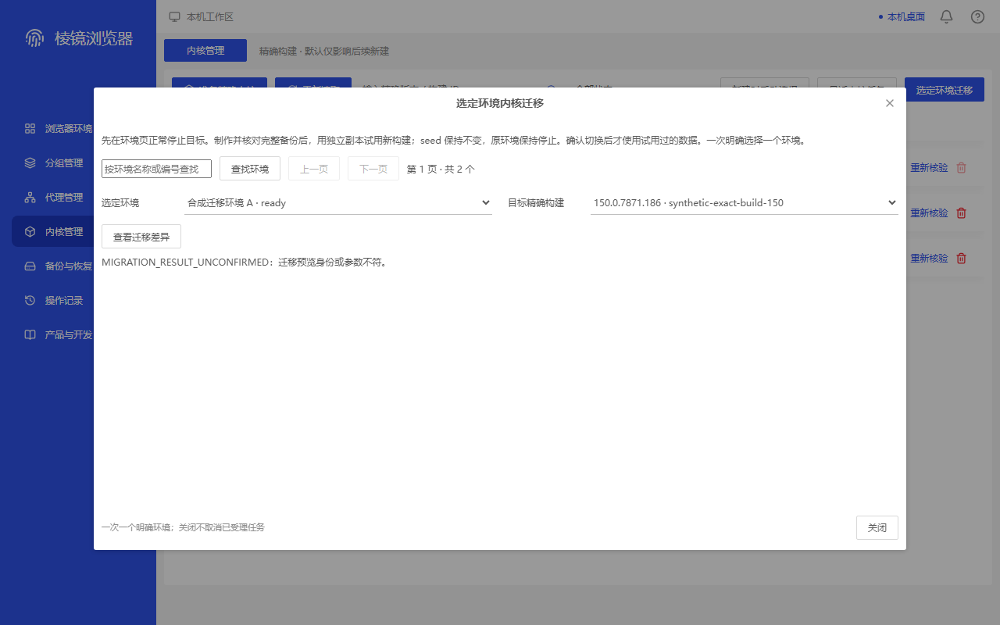
e3f954b46618b08eb6124857429fc63d3a7f88746ddd80fbdff8a86d67e5e756
gap-migration-no-alternative-build · 1280×800
MAPPED — 1040px选择窗已选环境、目标仍为请选择不同构建、预览禁用，无差异/试用且关闭完整。仅列表容器映射；没有其他verified候选由保存选项断言支持，折叠PNG本身不枚举全部构建。
同类参考容器：proxy-bound；不是同名原商业执行。
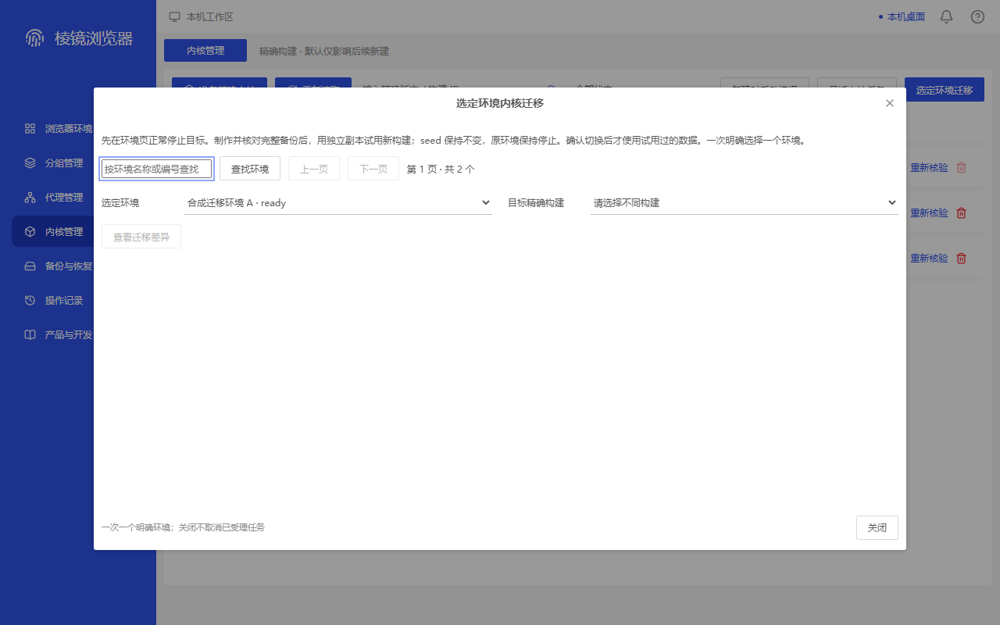
f00753f0655770ef46f7f499d83dc8ab1125f21b86f96698f4a3cdfd34f4eefe
gap-migration-policy-read-error · 1280×800
MAPPED — 1040px选择窗STORAGE_READ_FAILED及网络策略未读取/不允许试用可读，没有差异/备份试用；关闭完整。仅列表容器/失败显示映射，不从读取失败推定直连或认证真实代理策略。
同类参考容器：proxy-bound；不是同名原商业执行。
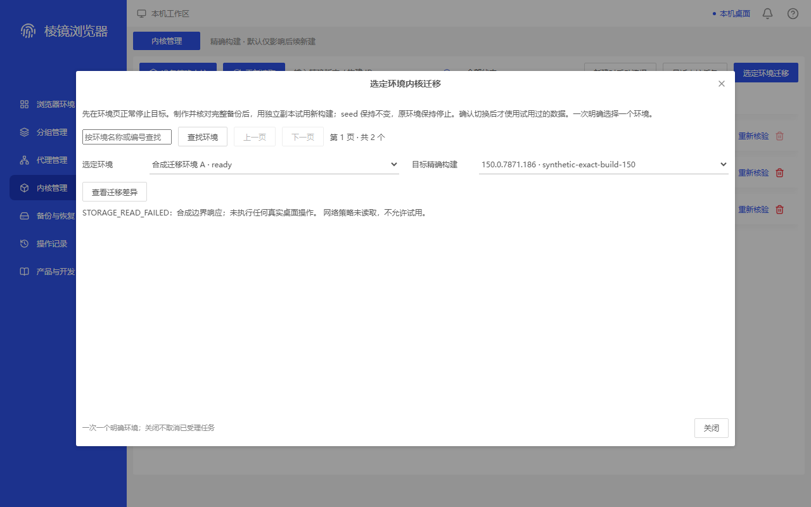
f6acaa6a0e296e5dc0b0c9c342903e6d1bbbe3fade70c7eb54070721542ee892
gap-migration-policy-target-mismatch · 1280×800
MAPPED — 1040px选择窗目标/修订/网络策略未确认、不能猜测直连说明清楚，无差异/试用，关闭完整。仅列表容器与合成拒绝状态映射，不证明真实策略读取或所有目标校验。
同类参考容器：proxy-bound；不是同名原商业执行。
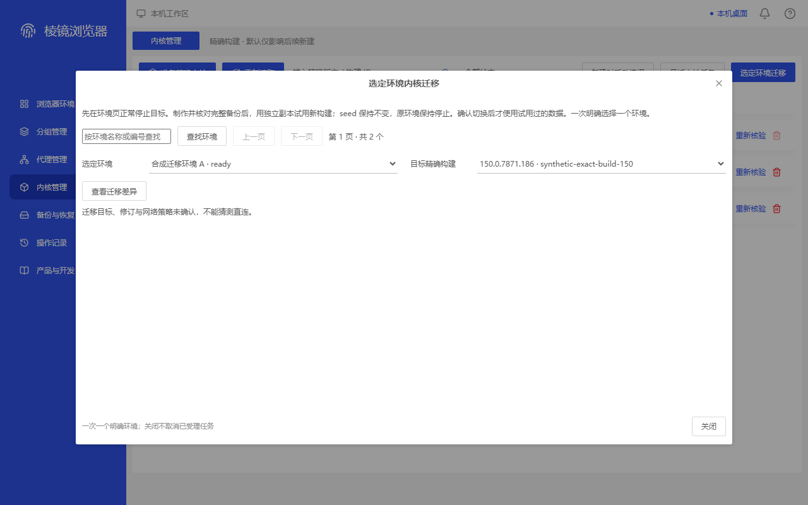
7ef38afddae501d7194e2c195f80f003fc2b569fc24fe7c7e5d4a7bc34b5d6e5
gap-migration-prepare-accepted-unconfirmed · 1280×800
MAPPED — 原请求待核实/MIGRATION_RESULT_UNCONFIRMED、核实入口及新试用禁用可读，非备份成功。清单声明group-delete-confirm，但短确认已关闭，实际1040px选择窗按已看proxy-bound比较；形式accepted区别来自保存回执，参考归属不符另记。
捕获时参考标记：group-delete-confirm；独立审查实际比较：proxy-bound。原标记不覆盖，不宣称已关闭的短确认被拍到或原同名业务通过。
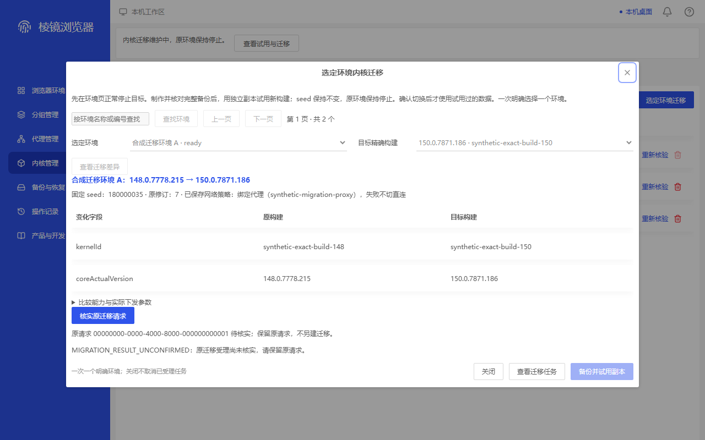
e2b75be330d170447ba0aa48c6ad2a47b750b0fbb5f9e46ccc913ac3fcfd6703
gap-migration-prepare-unknown-no-id · 1280×800
MAPPED — 原请求保留/NATIVE_UNAVAILABLE、核实入口及新试用禁用可读，无任务明细，未知不等于备份完成。清单声明group-delete-confirm，实际短确认已关的1040px选择窗按proxy-bound比较；无ID投影区别依赖保存记录，归属不符另记。
捕获时参考标记：group-delete-confirm；独立审查实际比较：proxy-bound。原标记不覆盖，不宣称已关闭的短确认被拍到或原同名业务通过。
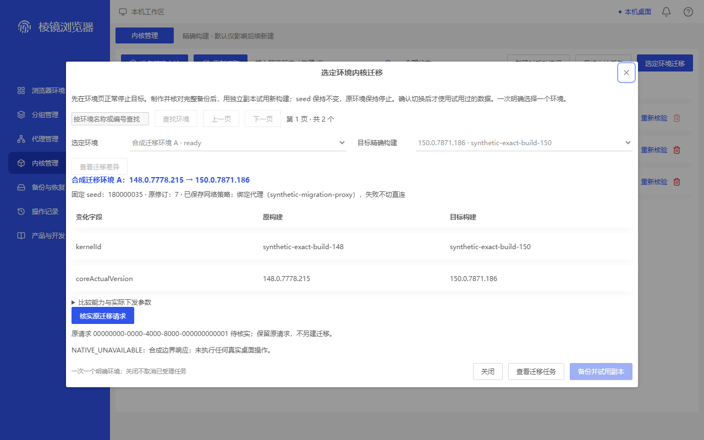
6eb60f6cd970275bf89c06810404cfd6a98a40dd4cc08f16b7783af14c41e856
gap-migration-prepare-unknown-with-id · 1280×800
MAPPED — 原请求保留/NATIVE_UNAVAILABLE、核实/查看任务入口及新试用禁用可读，未展开具体任务ID。清单声明group-delete-confirm，实际1040px选择窗按proxy-bound比较；带ID区别来自保存回执，不推定已备份，归属不符另记。
捕获时参考标记：group-delete-confirm；独立审查实际比较：proxy-bound。原标记不覆盖，不宣称已关闭的短确认被拍到或原同名业务通过。
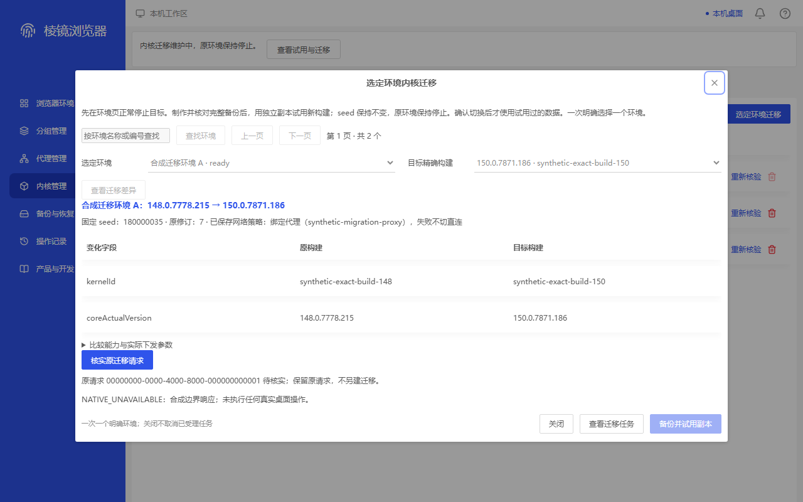
77dca033bd12c2fbe3cfadcef6ef1d3ae256d30a96765a0cdb508c68315376bd
gap-migration-protected-read-error · 1280×800
MAPPED — 400px任务窗同一合成任务、结果未确认/保持保护、STORAGE_READ_FAILED清楚，退出未确认/配置未提交，核对/关闭可达。仅批次结果容器映射，读取失败不能解除保护，也不是真实原任务恢复验收。
同类参考容器：batch-progress-fixture；不是同名原商业执行。
f74ec12ac9ac1151d6809f7b8c1b32b1d7defb9c2144d59654bc36695c476fae
gap-migration-recover-original-fresh-diff · 1280×800
MAPPED — 1040px选择窗新读差异显示旧→目标构建、两行变化、固定seed/修订及保存代理，试用入口/footer完整。仅列表容器映射；恢复原状态/重新取差异的动作过程来自保存合成记录，不证明真实目录恢复。
同类参考容器：proxy-bound；不是同名原商业执行。
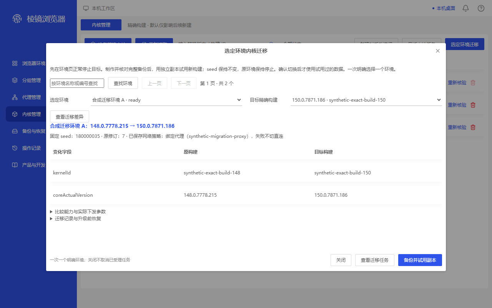
4c2e6b330121c83b96cfb9cf638071afc6c66e7b6e599502fb3e91d9b36d662f
gap-migration-recover-unknown · 1280×800
MAPPED — 400px任务窗同一任务、结果未确认/保持保护与NATIVE_UNAVAILABLE清楚，退出/提交未确认，核对/关闭可达。仅批次结果容器映射，准确任务scope另有保存回执，未知不是迁移/恢复成功或真实native验收。
同类参考容器：batch-progress-fixture；不是同名原商业执行。
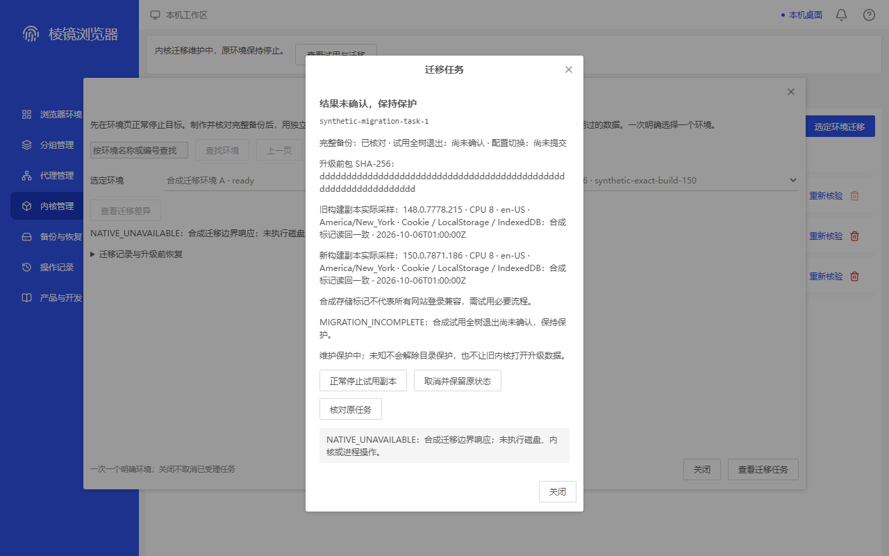
12ef6a1fded82cacb021ec53f218af87607288e19805dfb371b29acc4fce7d0c
gap-migration-revision-conflict · 1280×800
MAPPED — 1040px选择窗显示读取网络策略后配置变化、须重读差异且不可沿用旧策略；没有差异/试用，关闭完整。仅列表容器及合成修订冲突显示映射，不认证真实并发控制。
同类参考容器：proxy-bound；不是同名原商业执行。
57f15e60f71e06264345ce75882b5b7b73ca01678e413255cc3662a6e8968bda
gap-migration-rollback-apply-expired · 1280×800
MAPPED — 400px完整恢复结果窗显示待核实与PREVIEW_EXPIRED合成错误，返回/返回影响确认完整，没有恢复完成或新任务成功。仅批次结果容器映射，不证明真实过期事务/恢复执行。
同类参考容器：batch-progress-fixture；不是同名原商业执行。
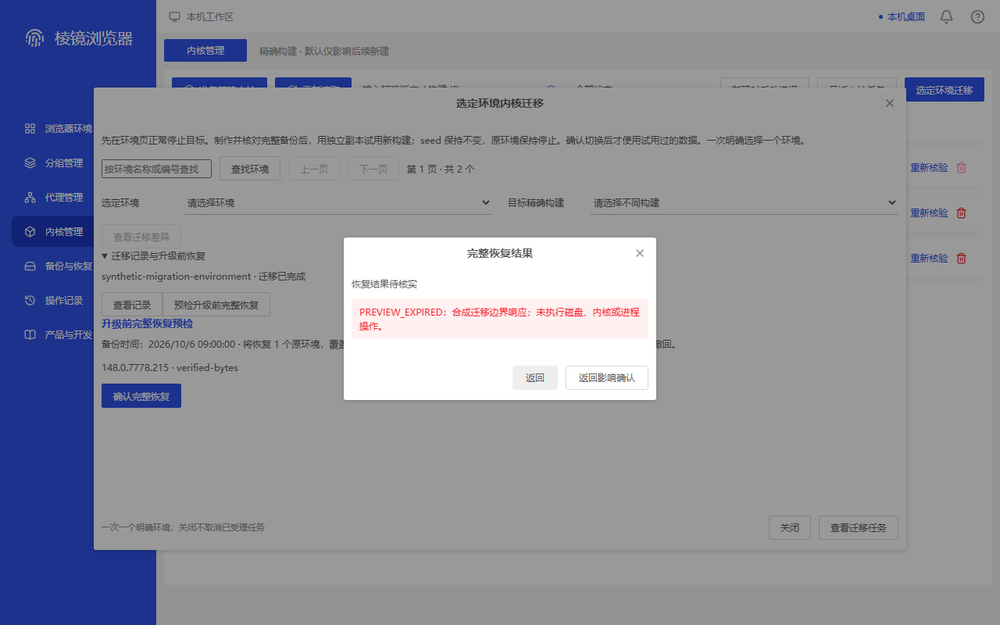
0f9b383d89e65e97871846f15e7d547a761e0cd29afd8318e51773183a99822c
gap-migration-rollback-hash-mismatch · 1280×800
MAPPED — 1040px历史窗MIGRATION_RESULT_UNCONFIRMED及预检未核实或已取消可读，没有恢复确认，原历史入口/footer完整。包摘要不符原因来自保存回执；仅列表容器/拒收显示映射，不是真实归档校验。
同类参考容器：proxy-bound；不是同名原商业执行。
99b481a55d7e0b8be336e96db558ea3d0696ef9aea74b86d2eb31101817dd488
gap-migration-rollback-preview-expired · 1280×800
MAPPED — 1040px历史窗PREVIEW_EXPIRED合成说明、原记录/预检入口和关闭footer清楚，没有有效恢复预检或确认。仅列表容器/过期拒绝显示映射，不证明真实包、时钟或恢复能力。
同类参考容器：proxy-bound；不是同名原商业执行。
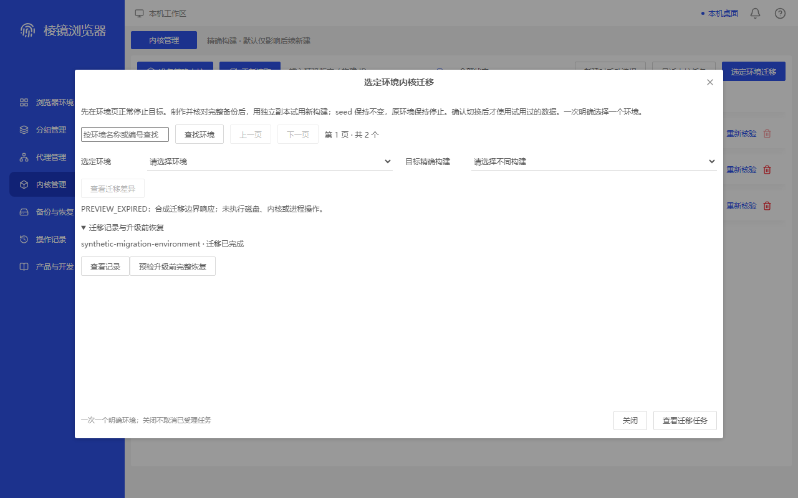
1e193d61375b3c1a73cee8d4def850cdce12c9f52bfd9b2c1f0adf22fc9e42fc
gap-migration-rollback-unknown-route-return · 1280×800
MAPPED — 400px恢复结果窗显示未完成/维护保护、环境1/已切换0/已确认未完成、核实原请求及禁用取消，NATIVE_UNAVAILABLE与footer完整。仅批次结果容器映射；换页及准确lease由保存记录支持，不覆盖M22未知discard恢复缺口。
同类参考容器：batch-progress-fixture；不是同名原商业执行。
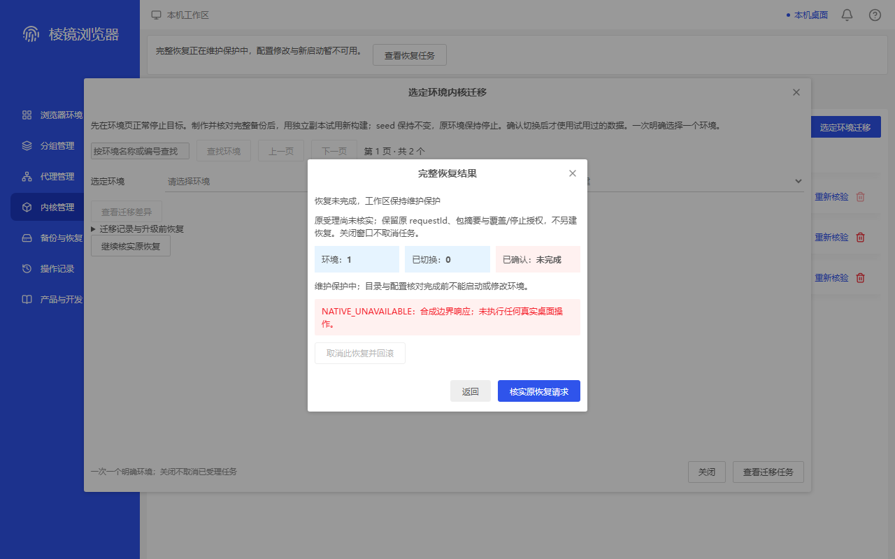
206eec22db2f604626ff81f7ce90e28d8cd9b7a9f5252e72aa0d3697e1abc62b
gap-migration-stop-unknown · 1280×800
MAPPED — 400px任务窗仍试用新构建副本，退出尚未确认/配置未提交，同一任务、维护保护及NATIVE_UNAVAILABLE清楚，操作/关闭完整。仅批次结果容器映射，unknown stop不是正常退出或真实进程通过。
同类参考容器：batch-progress-fixture；不是同名原商业执行。
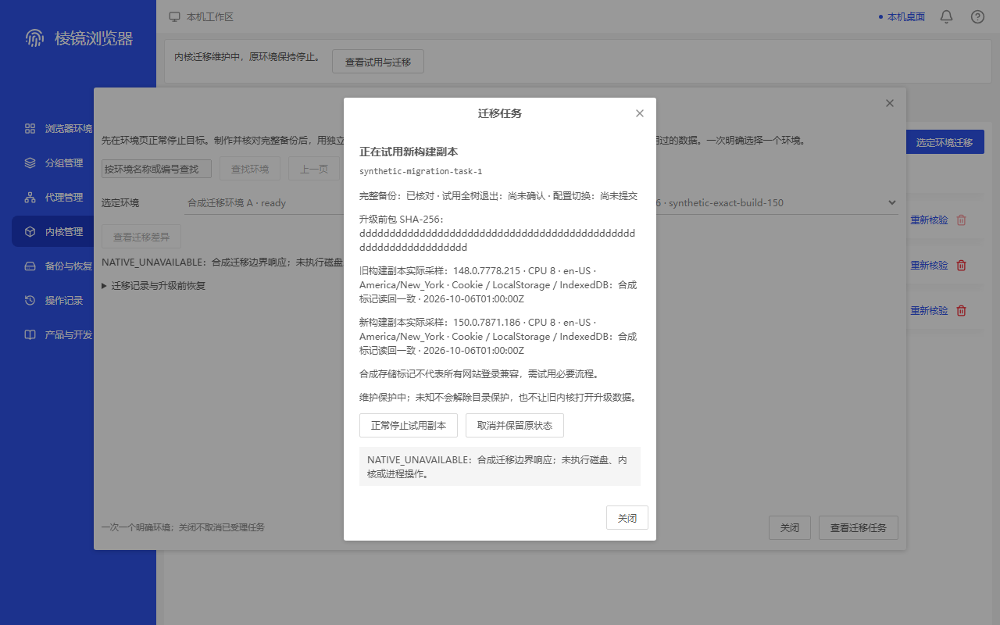
44489875bbbb7dae7071aebdafffbc350e1f1d35a8f6fc08c7cadc6a36c1df76
gap-migration-storage-pending · 1280×800
MAPPED — 400px任务窗结果待保存/STORAGE_WRITE_FAILED、退出和切换均未确认、保护及核对原任务可读，没有明确切换入口，关闭完整。仅批次结果容器映射，合成persistencePending不能当完成或真实持久化验收。
同类参考容器：batch-progress-fixture；不是同名原商业执行。
fa6afb8e4f3eb36edad166a96bc4d77b6beeb33b883f785fcb37aa6048ca54ca
gap-migration-trial-direct-checked · 1280×800
MAPPED — 400px短确认明确未绑定代理/副本直连、原环境停止且未切目录；独立同意已勾选，主按钮可用，取消/关闭可见。仅原危险确认容器映射，不是原删除业务、真实直连或试用启动验收。
同类参考容器：group-delete-confirm；不是同名原商业执行。
544371dc10b81a40258af34a6630a6db961dcfe9a1ba734431573d0fc458099a
gap-migration-trial-direct-unchecked · 1280×800
MAPPED — 400px短确认直连/独立副本说明可读，同意未勾选，主按钮呈禁用态，取消/关闭完整。仅原危险确认容器及显式同意门控映射，不证明真实直连或已制作备份。
同类参考容器：group-delete-confirm；不是同名原商业执行。
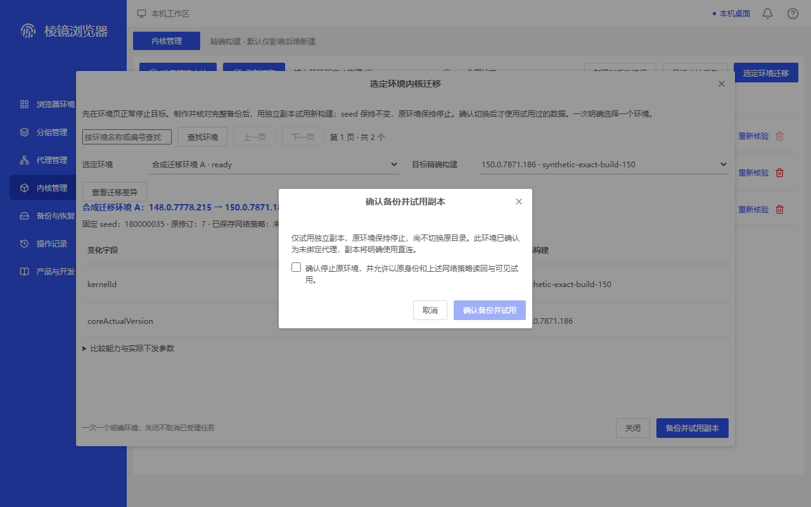
dbe3d8a1b560ea5e46b09606ead2c9fbcafb60629447dd7be26ee1bf6c7faa1c
gap-migration-trial-proxy-checked · 1280×800
MAPPED — 400px短确认沿用保存代理/保护链、故障不退回直连，与直连说明不同；同意已勾选，主按钮/取消/关闭完整。仅原危险确认容器映射，不是同名原业务、真实代理连通或试用验收。
同类参考容器：group-delete-confirm；不是同名原商业执行。
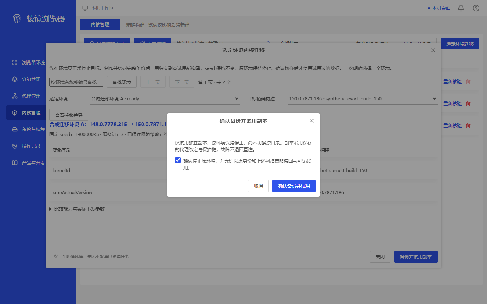
48b6d2c56a14afe6626a2ffbd89cd457c5e0d12b43c70816d3a8ca6af0f95bec
gap-migration-backup-pending · 1440×900
MAPPED — 400px任务窗显示制作升级前完整备份，备份尚未完成/退出未确认/配置未提交；任务、保护、取消及关闭可读。仅批次结果容器映射，阶段来自有限合成回执，不证明真实备份。
同类参考容器：batch-progress-fixture；不是同名原商业执行。
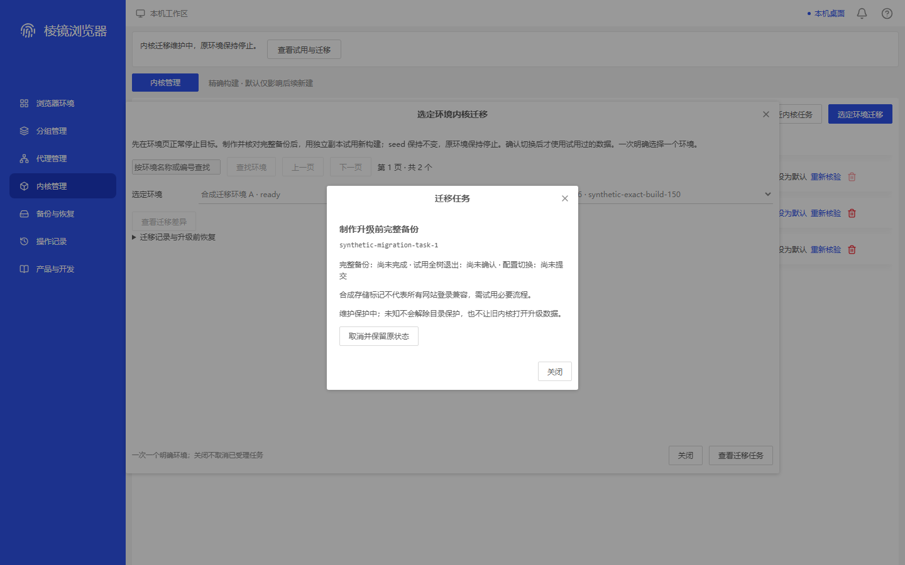
f2d5b4e930c4eb9ea325341fa9884efbf11c7da9ae3367ba56fed7440be4e7ed
gap-migration-backup-ready · 1440×900
MAPPED — 400px任务窗显示完整备份已核对与合成包SHA，退出未确认/配置未提交仍清楚；取消/关闭完整。仅批次结果容器映射，已核对字段不是实际包验证通过。
同类参考容器：batch-progress-fixture；不是同名原商业执行。
095286d22ad232358dd5cb6fdec03ad94c0c96c0a57740a5c0800445c3544aa9
gap-migration-copy-ready · 1440×900
MAPPED — 400px任务窗显示独立工作副本已准备，同一合成任务/包且退出未确认、配置未提交；保护与取消/关闭可读。仅批次结果容器映射，不证明真实目录复制或迁移完成。
同类参考容器：batch-progress-fixture；不是同名原商业执行。
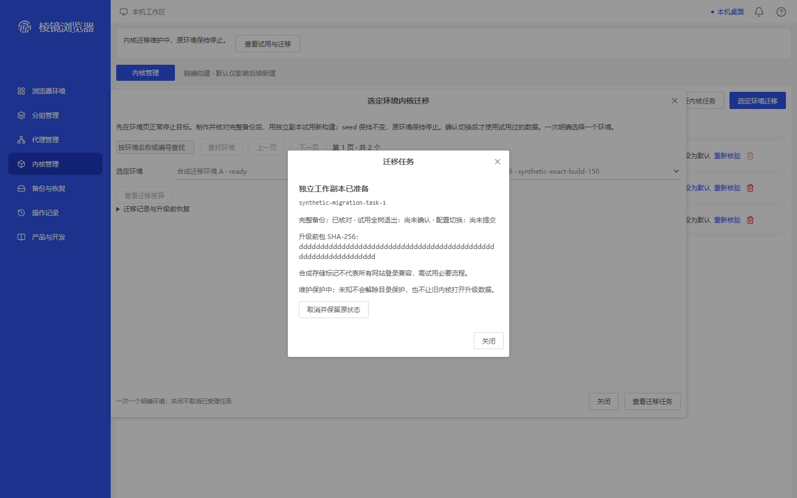
d70780dbc99cfef087ea55fd533e625bd2107beb363adc5a32ced6b599dd7275
gap-migration-expanded-bottom · 1440×900
MAPPED — 1040×592列表容器映射；两侧uiLanguage/system/未下发--lang末行实际可见，正文494/600/106，footer y696–754未覆盖末行。顶部选择行随滚动离开边缘属底部位置；支持参数/能力为合成合同，非内核验收。
同类参考容器：proxy-bound；不是同名原商业执行。
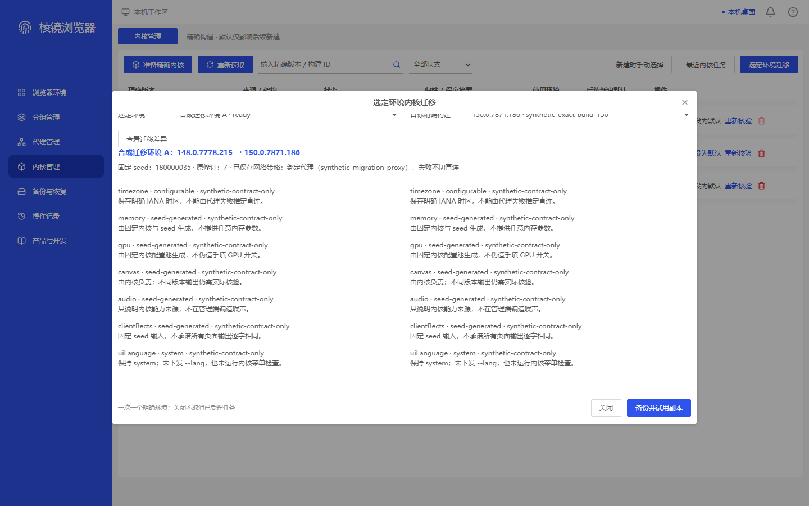
ea2bf427eb6e75679b33229ff3d951a5e0445e90d2a42f13a62041cf29ba2764
gap-migration-expanded-top · 1440×900
MAPPED — 1040×592列表容器映射；两行构建变化、固定seed/修订/保存代理、展开位置及两侧参数开头可见，footer完整。正文494/600/0仍有滚动内容，不能作为全部8参数/13能力正文或真实内核读值通过。
同类参考容器：proxy-bound；不是同名原商业执行。
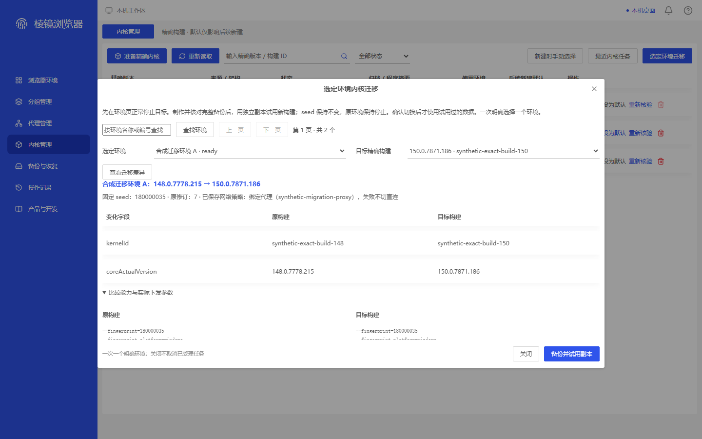
24cb49502d73bd5250a82cfbf5b410e1af4b12d2c901604fe882d60a8f1db1c9
gap-migration-history-gates · 1440×900
MAPPED — 1040px列表容器内两条历史记录与查看按钮可读；原状态已保留且无核实完整备份的记录，其恢复预检呈禁用态，另一终态有入口。仅合成历史门控显示，不证明备份存在或真实恢复可用。
同类参考容器：proxy-bound；不是同名原商业执行。
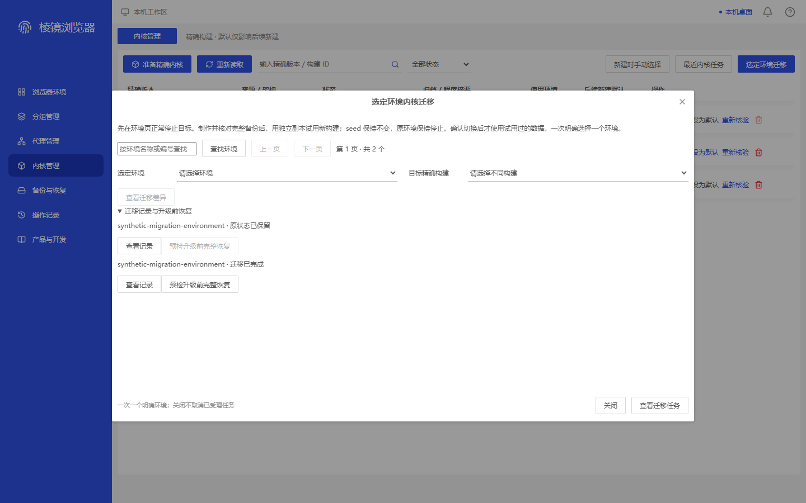
e7a01afbabd5e430a921acf9c930b02c3f8e00f462cba9c0ab47a99590a078ce
gap-migration-lookup-busy · 1440×900
MAPPED — 1040px查找窗显示在途合成查询，选择/预览呈禁用态，没有差异/试用，分页与关闭footer完整。仅列表容器及在途显示映射；释放/迟到响应顺序来自保存动作，不由静态PNG认证。
同类参考容器：proxy-bound；不是同名原商业执行。
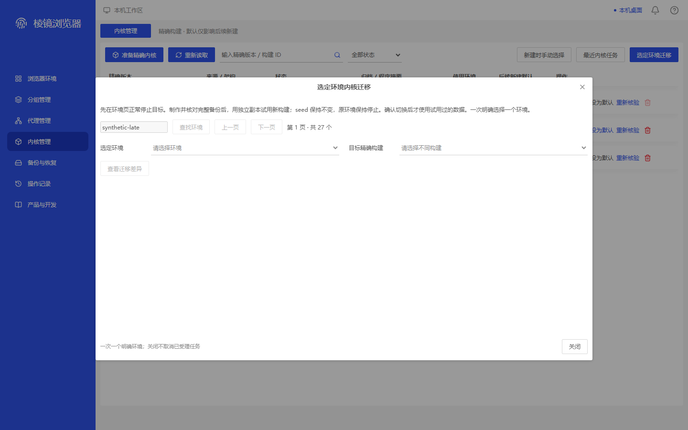
7b2d590ecb979f9cee703d412cf77a0b6750a4eea4c2ce8af704fac30fd39e01
gap-migration-lookup-empty · 1440×900
MAPPED — 1040px查找窗第1页/共0个、环境占位与禁用预览可读，无差异/试用，关闭footer完整。仅列表容器/空结果映射；折叠选择框不展示全部选项，未执行真实查找。
同类参考容器：proxy-bound；不是同名原商业执行。
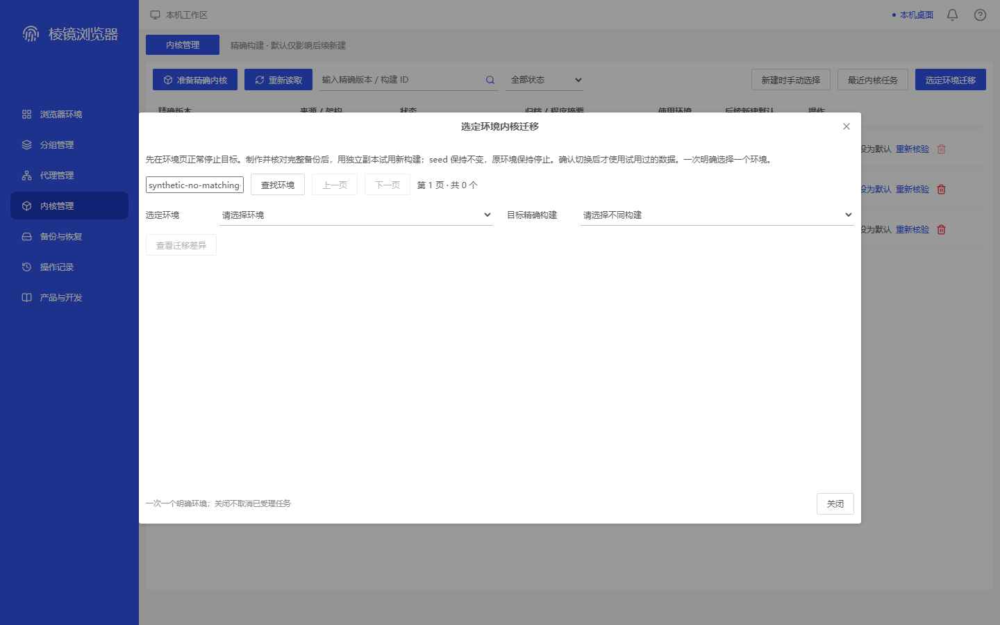
db527d12bf7dab127b91f8647af823dc7a532e4e3b60f4253107ee5ff5917c6b
gap-migration-lookup-page-two · 1440×900
MAPPED — 1040px查找窗第2页/共27个、已选目标环境及精确构建、查看差异入口清晰，关闭footer完整。25+2及目标首轮off-page来自保存列表/请求；本图折叠选项不能单独证明两项清单或同名原迁移业务。
同类参考容器：proxy-bound；不是同名原商业执行。
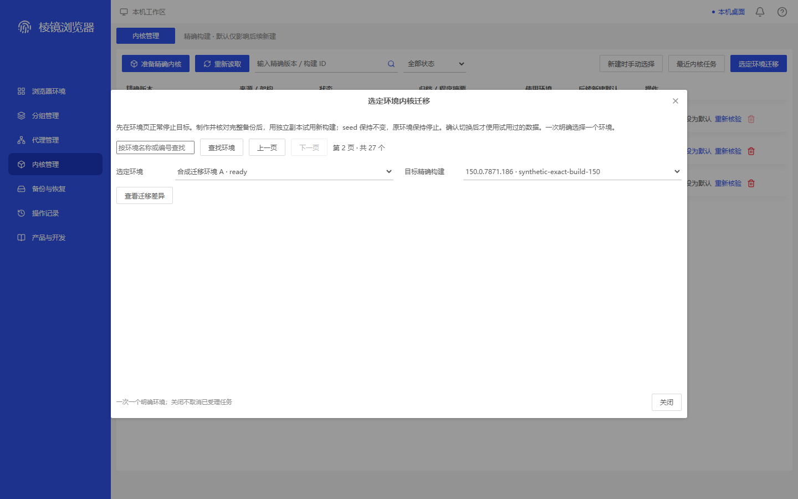
a0eef34b6e36b34a21c5ada13ef91f58ad14e1a349a1053d95aac89115de3bce
gap-migration-lookup-read-error · 1440×900
MAPPED — 1040px查找窗合成读取失败说明可见，旧页共27个仍保留、预览禁用且无差异；关闭完整。仅列表容器/失败显示映射，不把失败当空结果或读取成功，重读行为另有保存记录。
同类参考容器：proxy-bound；不是同名原商业执行。
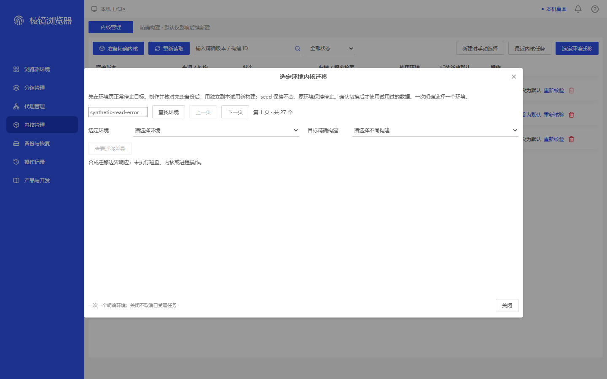
10b9c6af64ed64f063ca693761d407ef0ab2aecaff4b79625a21161c3b47e772
gap-migration-malformed-migration-preview · 1440×900
MAPPED — 1040px选择窗显示MIGRATION_RESULT_UNCONFIRMED，没有差异/备份试用入口，错误与关闭可读。仅列表容器及拒收显示映射，预览身份不符原因由保存回执说明，不认证全部校验或真实native。
同类参考容器：proxy-bound；不是同名原商业执行。
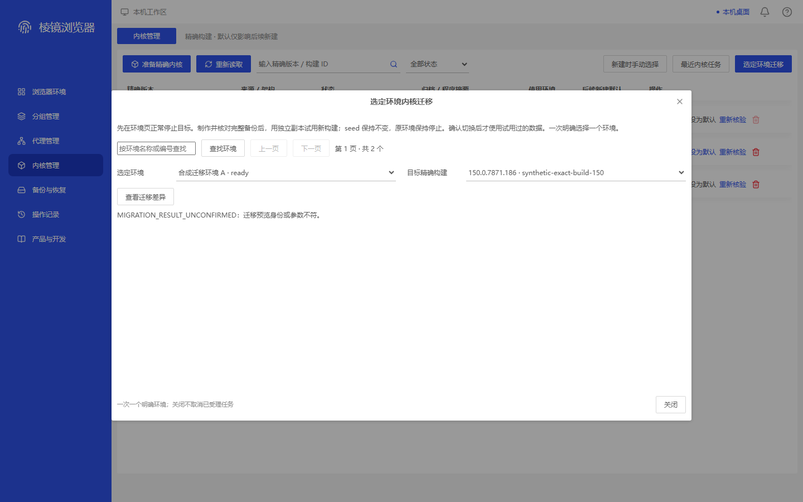
a0c2a62cbfbc9d9a64b072bd6e9eecc1cdb9da8bc7878313f07c69a1fd7c1b5c
gap-migration-no-alternative-build · 1440×900
MAPPED — 1040px选择窗已选环境、目标仍为请选择不同构建、预览禁用，无差异/试用且关闭完整。仅列表容器映射；没有其他verified候选由保存选项断言支持，折叠PNG本身不枚举全部构建。
同类参考容器：proxy-bound；不是同名原商业执行。
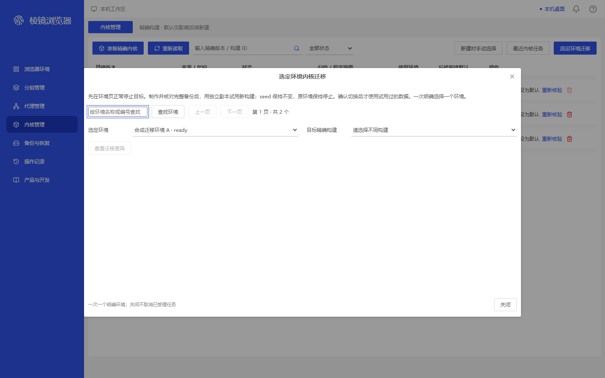
4acde111c437b606feec3a0c51ff95572567698c699f081f7c82ce6d7e350df1
gap-migration-policy-read-error · 1440×900
MAPPED — 1040px选择窗STORAGE_READ_FAILED及网络策略未读取/不允许试用可读，没有差异/备份试用；关闭完整。仅列表容器/失败显示映射，不从读取失败推定直连或认证真实代理策略。
同类参考容器：proxy-bound；不是同名原商业执行。
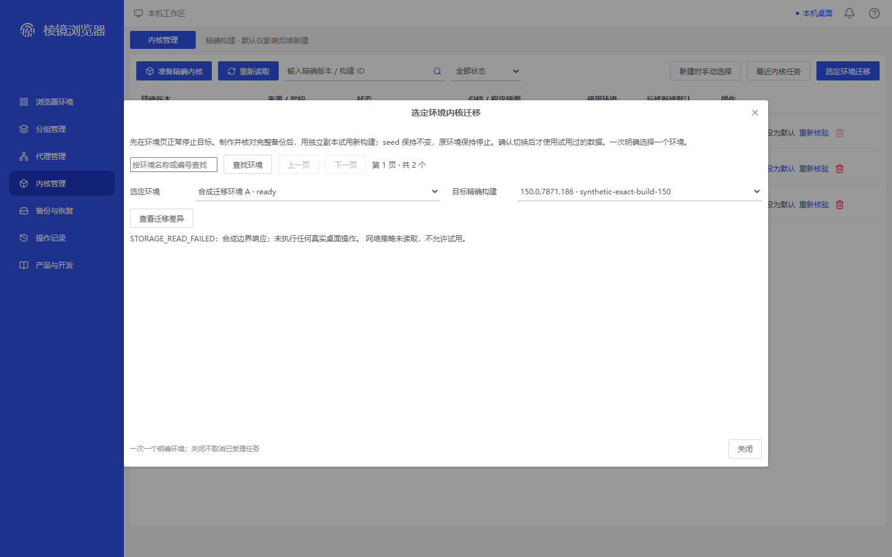
eb2b863e8d24d1b3c47070d2fb0ca2ae8a874bdccbdb9fe7a16065f6de1c4ee8
gap-migration-policy-target-mismatch · 1440×900
MAPPED — 1040px选择窗目标/修订/网络策略未确认、不能猜测直连说明清楚，无差异/试用，关闭完整。仅列表容器与合成拒绝状态映射，不证明真实策略读取或所有目标校验。
同类参考容器：proxy-bound；不是同名原商业执行。
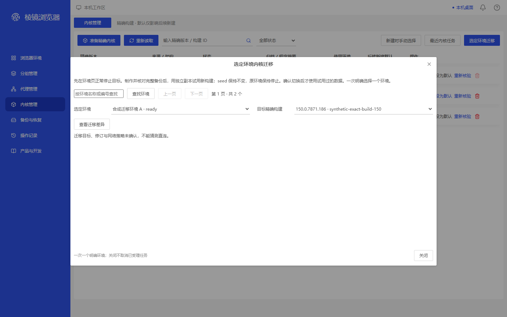
6a005d56a11c0199ec8096b8264454f4208872b8eaaab53ba13d5920455d52ad
gap-migration-prepare-accepted-unconfirmed · 1440×900
MAPPED — 原请求待核实/MIGRATION_RESULT_UNCONFIRMED、核实入口及新试用禁用可读，非备份成功。清单声明group-delete-confirm，但短确认已关闭，实际1040px选择窗按已看proxy-bound比较；形式accepted区别来自保存回执，参考归属不符另记。
捕获时参考标记：group-delete-confirm；独立审查实际比较：proxy-bound。原标记不覆盖，不宣称已关闭的短确认被拍到或原同名业务通过。
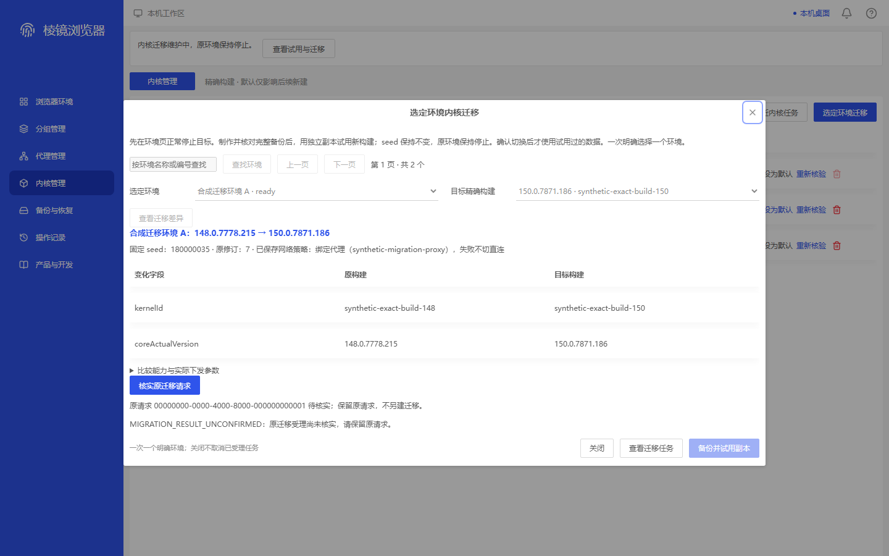
7fd2833abecaa04da2bf77691bce54b513fbb154e99d51b1dc062747db74bfb8
gap-migration-prepare-unknown-no-id · 1440×900
MAPPED — 原请求保留/NATIVE_UNAVAILABLE、核实入口及新试用禁用可读，无任务明细，未知不等于备份完成。清单声明group-delete-confirm，实际短确认已关的1040px选择窗按proxy-bound比较；无ID投影区别依赖保存记录，归属不符另记。
捕获时参考标记：group-delete-confirm；独立审查实际比较：proxy-bound。原标记不覆盖，不宣称已关闭的短确认被拍到或原同名业务通过。
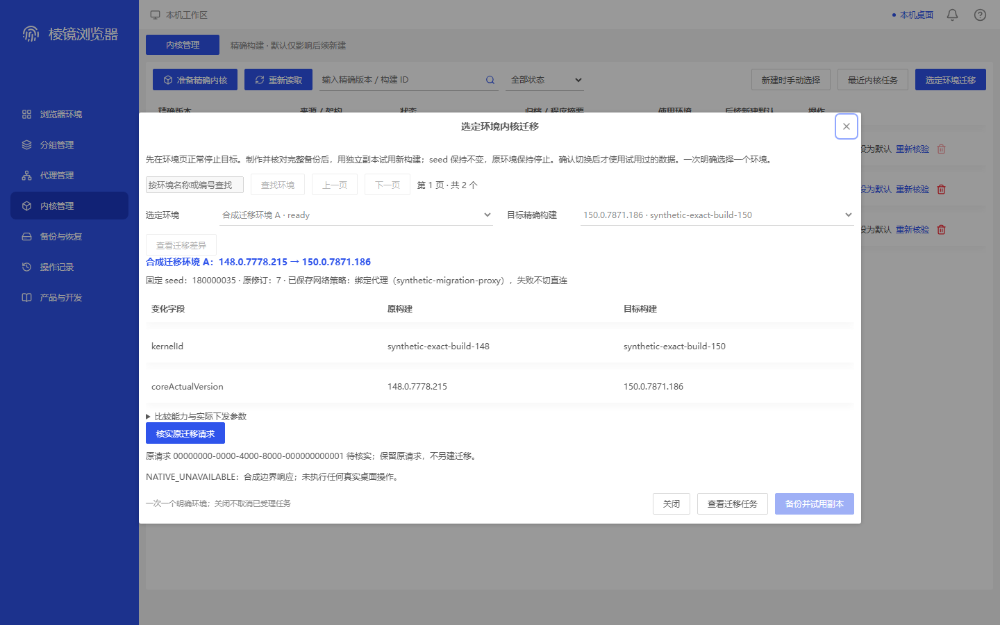
9cf070180bae5c755823cfc18ea90187ef65ceff3a49a8524cc5001c4f4bee32
gap-migration-prepare-unknown-with-id · 1440×900
MAPPED — 原请求保留/NATIVE_UNAVAILABLE、核实/查看任务入口及新试用禁用可读，未展开具体任务ID。清单声明group-delete-confirm，实际1040px选择窗按proxy-bound比较；带ID区别来自保存回执，不推定已备份，归属不符另记。
捕获时参考标记：group-delete-confirm；独立审查实际比较：proxy-bound。原标记不覆盖，不宣称已关闭的短确认被拍到或原同名业务通过。
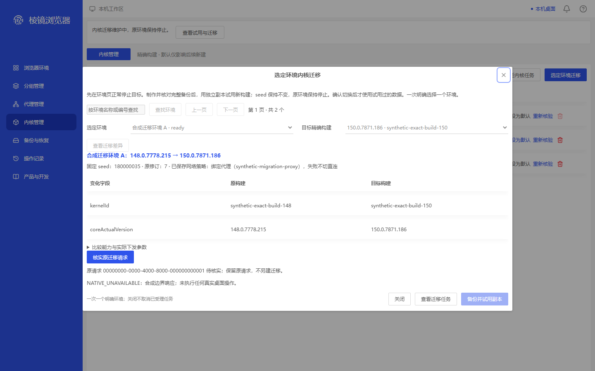
4fdf617bcb2ec7bcb9ecf2ed720e881ab1e2397cbd226073c9f050112e83ba09
gap-migration-protected-read-error · 1440×900
MAPPED — 400px任务窗同一合成任务、结果未确认/保持保护、STORAGE_READ_FAILED清楚，退出未确认/配置未提交，核对/关闭可达。仅批次结果容器映射，读取失败不能解除保护，也不是真实原任务恢复验收。
同类参考容器：batch-progress-fixture；不是同名原商业执行。
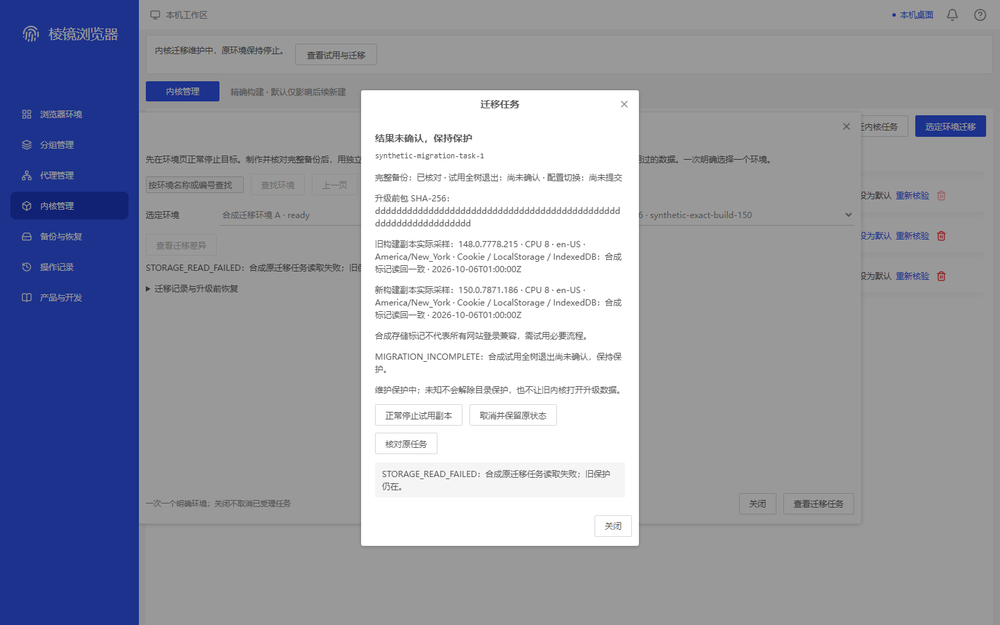
35afa06a385b4e87056d733dfafcf0bee01157ef8372d060ce11258edcdc0fb0
gap-migration-recover-original-fresh-diff · 1440×900
MAPPED — 1040px选择窗新读差异显示旧→目标构建、两行变化、固定seed/修订及保存代理，试用入口/footer完整。仅列表容器映射；恢复原状态/重新取差异的动作过程来自保存合成记录，不证明真实目录恢复。
同类参考容器：proxy-bound；不是同名原商业执行。
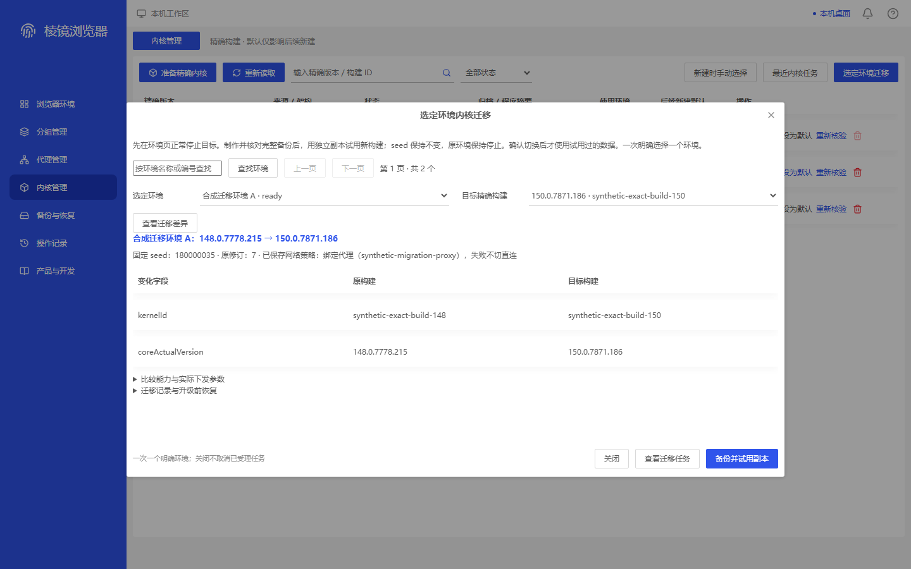
457feb856e41a7b38cfc68fde32f54419fff3b21550e213c2f742af04dde4776
gap-migration-recover-unknown · 1440×900
MAPPED — 400px任务窗同一任务、结果未确认/保持保护与NATIVE_UNAVAILABLE清楚，退出/提交未确认，核对/关闭可达。仅批次结果容器映射，准确任务scope另有保存回执，未知不是迁移/恢复成功或真实native验收。
同类参考容器：batch-progress-fixture；不是同名原商业执行。
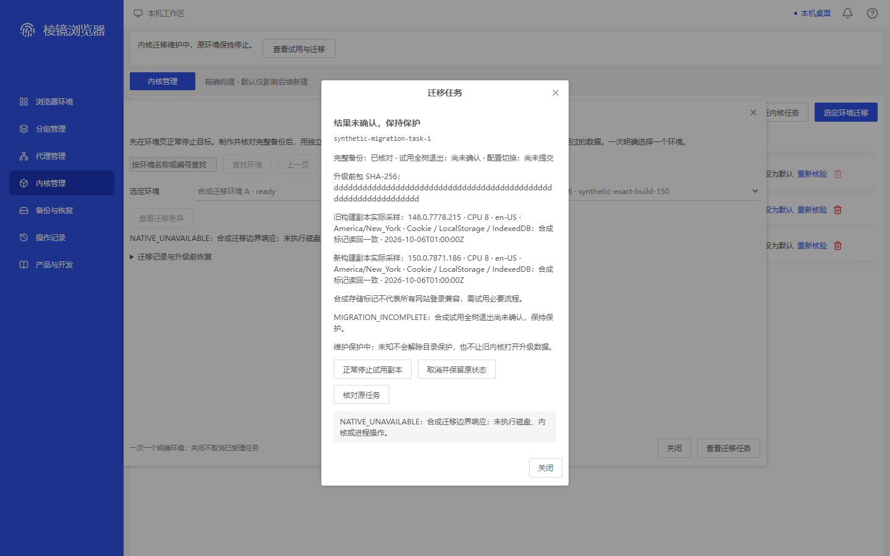
2ce5233a1f72d132bdd8b6d4e1c8e79470e699a3946ed678a913e6805bef32cf
gap-migration-revision-conflict · 1440×900
MAPPED — 1040px选择窗显示读取网络策略后配置变化、须重读差异且不可沿用旧策略；没有差异/试用，关闭完整。仅列表容器及合成修订冲突显示映射，不认证真实并发控制。
同类参考容器：proxy-bound；不是同名原商业执行。
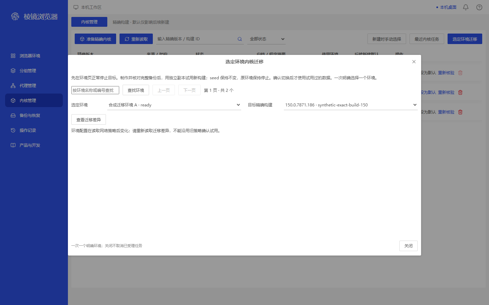
1c1417681a2a616a590ad349fef76d9c8475a48e31a7b850108bc552eefb89ac
gap-migration-rollback-apply-expired · 1440×900
MAPPED — 400px完整恢复结果窗显示待核实与PREVIEW_EXPIRED合成错误，返回/返回影响确认完整，没有恢复完成或新任务成功。仅批次结果容器映射，不证明真实过期事务/恢复执行。
同类参考容器：batch-progress-fixture；不是同名原商业执行。
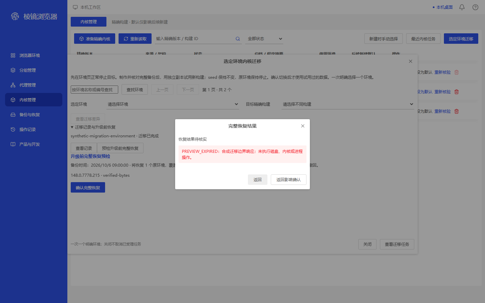
f20424e7014fdad6558bdf235d37fcb00ee117a65e818ec231b4f6d830ccbc9c
gap-migration-rollback-hash-mismatch · 1440×900
MAPPED — 1040px历史窗MIGRATION_RESULT_UNCONFIRMED及预检未核实或已取消可读，没有恢复确认，原历史入口/footer完整。包摘要不符原因来自保存回执；仅列表容器/拒收显示映射，不是真实归档校验。
同类参考容器：proxy-bound；不是同名原商业执行。
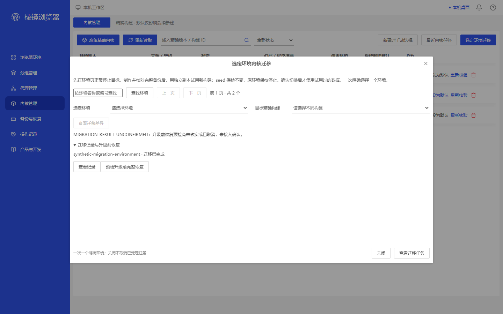
2a6d4ebf84e365fa833eadb9a64cb16db06a42a8f60eae0e39538c828e45c907
gap-migration-rollback-preview-expired · 1440×900
MAPPED — 1040px历史窗PREVIEW_EXPIRED合成说明、原记录/预检入口和关闭footer清楚，没有有效恢复预检或确认。仅列表容器/过期拒绝显示映射，不证明真实包、时钟或恢复能力。
同类参考容器：proxy-bound；不是同名原商业执行。
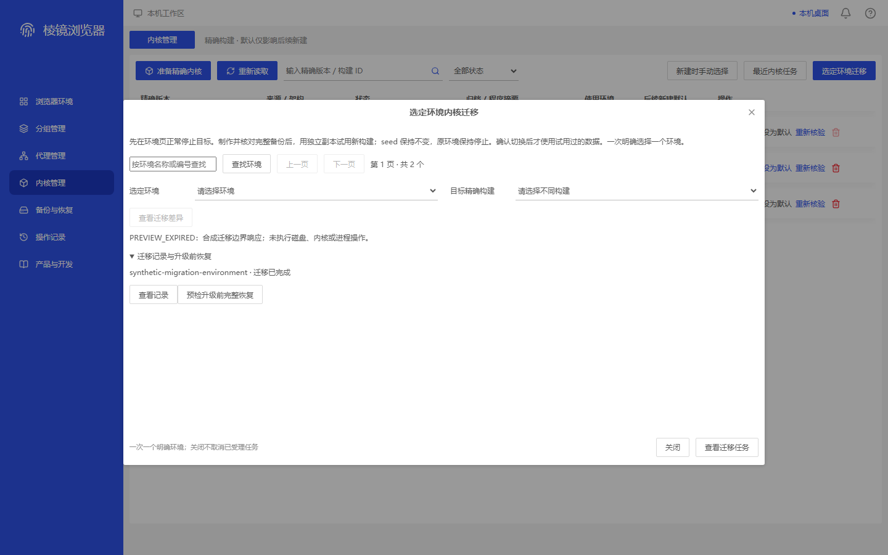
83516a99bbce94b23234ac4794e65d51371e4b5034526a11e867204a68c1c795
gap-migration-rollback-unknown-route-return · 1440×900
MAPPED — 400px恢复结果窗显示未完成/维护保护、环境1/已切换0/已确认未完成、核实原请求及禁用取消，NATIVE_UNAVAILABLE与footer完整。仅批次结果容器映射；换页及准确lease由保存记录支持，不覆盖M22未知discard恢复缺口。
同类参考容器：batch-progress-fixture；不是同名原商业执行。
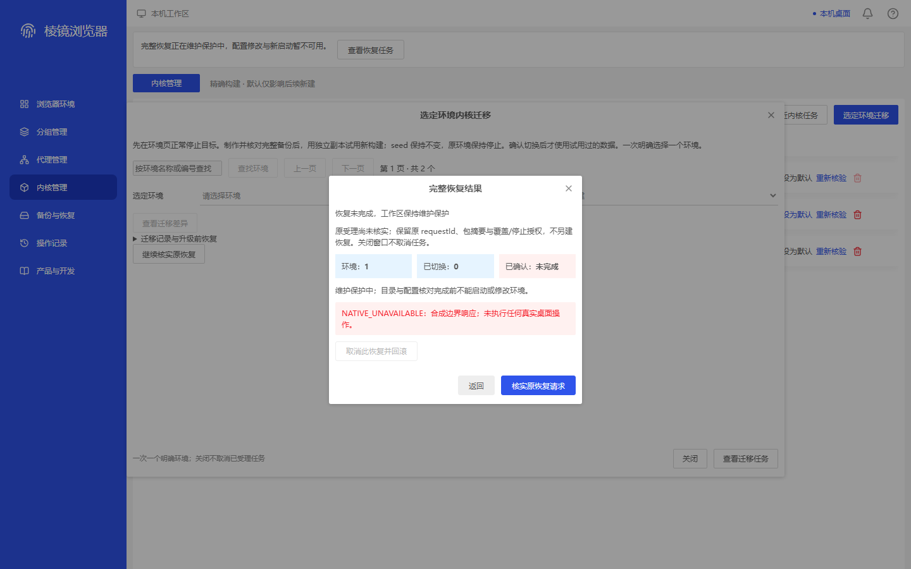
51abe148b7f1857a6ef5cc309fa7d02879bfb541519683ca4fc1a0a8b45645fb
gap-migration-stop-unknown · 1440×900
MAPPED — 400px任务窗仍试用新构建副本，退出尚未确认/配置未提交，同一任务、维护保护及NATIVE_UNAVAILABLE清楚，操作/关闭完整。仅批次结果容器映射，unknown stop不是正常退出或真实进程通过。
同类参考容器：batch-progress-fixture；不是同名原商业执行。
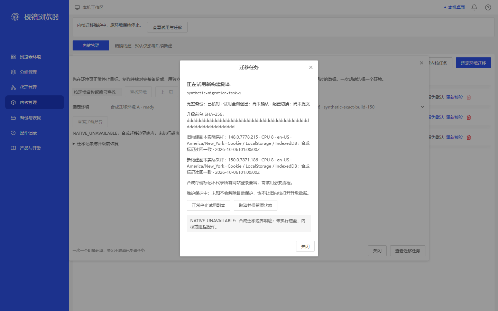
60cfb98e5116e8c1873c9c199eb56c09983b82c476a5acc4db9be9e6693c75fb
gap-migration-storage-pending · 1440×900
MAPPED — 400px任务窗结果待保存/STORAGE_WRITE_FAILED、退出和切换均未确认、保护及核对原任务可读，没有明确切换入口，关闭完整。仅批次结果容器映射，合成persistencePending不能当完成或真实持久化验收。
同类参考容器：batch-progress-fixture；不是同名原商业执行。
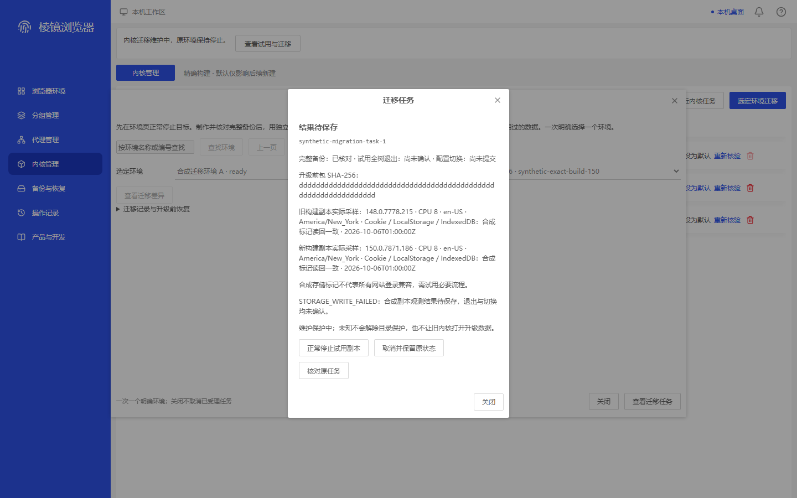
5510796b083303ef2bafaa8783a6a8ead2cdfd2c9e03e4a6b742ccf3221ed63e
gap-migration-trial-direct-checked · 1440×900
MAPPED — 400px短确认明确未绑定代理/副本直连、原环境停止且未切目录；独立同意已勾选，主按钮可用，取消/关闭可见。仅原危险确认容器映射，不是原删除业务、真实直连或试用启动验收。
同类参考容器：group-delete-confirm；不是同名原商业执行。
9efca00ec537d87de05a2fc5b564d02fe72dcaee7aebe977675a9b20e47dd412
gap-migration-trial-direct-unchecked · 1440×900
MAPPED — 400px短确认直连/独立副本说明可读，同意未勾选，主按钮呈禁用态，取消/关闭完整。仅原危险确认容器及显式同意门控映射，不证明真实直连或已制作备份。
同类参考容器：group-delete-confirm；不是同名原商业执行。
1bb823e3d2eac42a7421a6a0e64b8cf70d5c7ce13f36c18e55b849460869923e
gap-migration-trial-proxy-checked · 1440×900
MAPPED — 400px短确认沿用保存代理/保护链、故障不退回直连，与直连说明不同；同意已勾选，主按钮/取消/关闭完整。仅原危险确认容器映射，不是同名原业务、真实代理连通或试用验收。
同类参考容器：group-delete-confirm；不是同名原商业执行。
b4f8228efc077375538b85b4c3c5932a0cf29b094c6ce3eacfa547f2771414f0